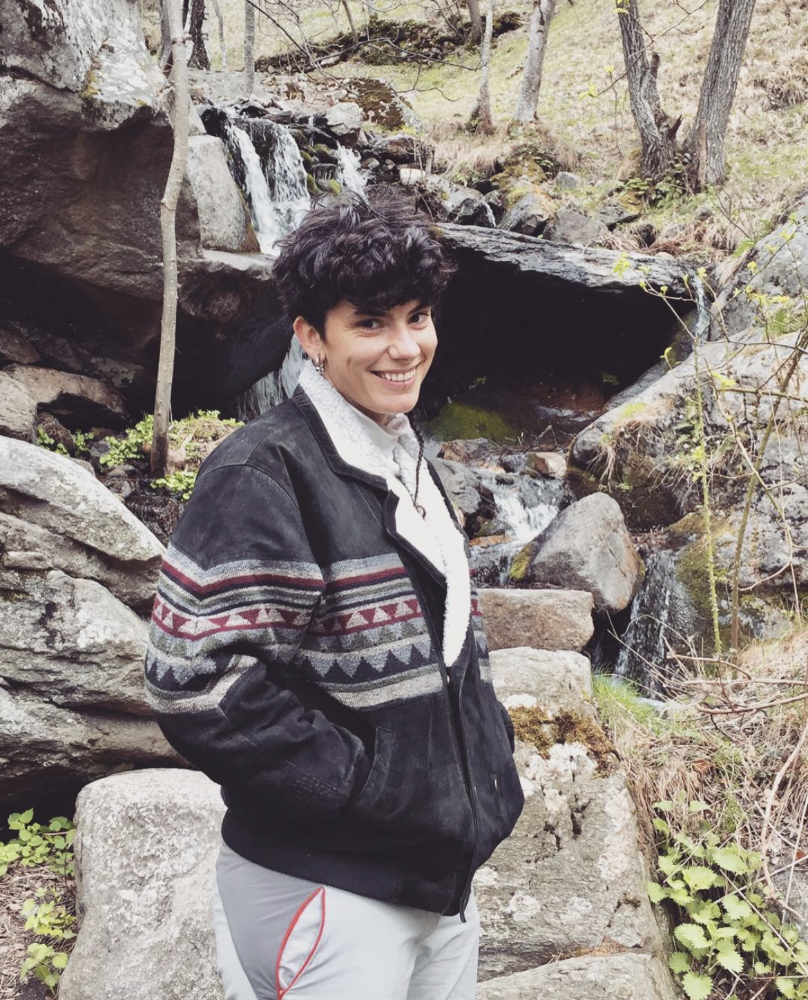

 Terrestrial ecologist interested in plant elemental composition and stoichiometry, biogeochemical cycles, plant-soil interactions, and how those interact with the carbon cycle and global change. I have performed fieldwork in Mediterranean and Tropical ecosystems but I have also worked at regional and global scales by using computational science, data synthesis, and artificial intelligence algorithms.
I have experience in teaching, and I enjoy sharing science with the general public, making it reachable and understandable to different ages and backgrounds. If you want to know more you can find my publications, teaching material, and outreach activities in the different tabs.